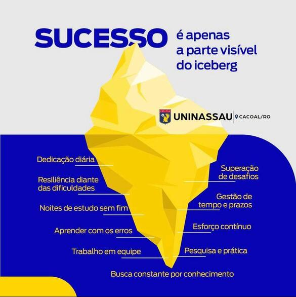
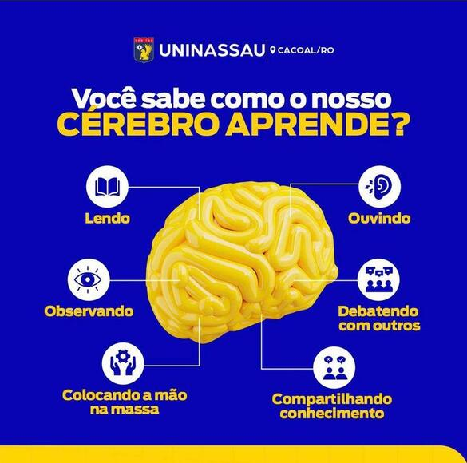
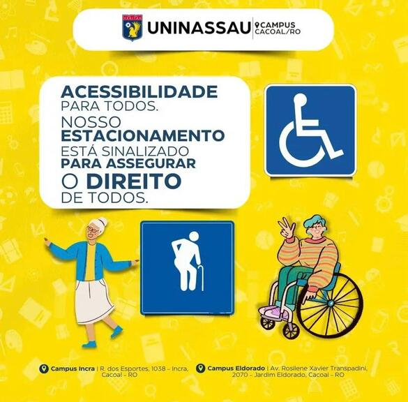

A UNINASSAU Cacoal, situada em uma das principais cidades do interior de Rondônia, destaca-se como um centro de excelência em educação superior na região. Parte integrante do prestigiado grupo UNINASSAU, a unidade de Cacoal oferece uma vasta gama de cursos de graduação e pós-graduação, todos voltados para a formação de profissionais altamente qualificados e preparados para enfrentar os desafios do mercado de trabalho contemporâneo.
A infraestrutura da UNINASSAU Cacoal é um dos seus grandes diferenciais. Com um campus moderno e bem equipado, a instituição proporciona um ambiente de aprendizagem estimulante e eficaz. As salas de aula são amplas e confortáveis, equipadas com recursos tecnológicos de ponta que facilitam o processo de ensino-aprendizagem. Além disso, a UNINASSAU Cacoal conta com laboratórios especializados que permitem aos alunos a prática e a aplicação dos conhecimentos teóricos adquiridos em sala de aula.
A biblioteca da instituição é outro destaque, oferecendo um vasto acervo de livros, periódicos e materiais digitais que suportam as atividades acadêmicas e de pesquisa dos alunos. As áreas de convivência são projetadas para promover a interação e o intercâmbio de ideias entre estudantes e professores, criando um ambiente acadêmico dinâmico e colaborativo.
A UNINASSAU Cacoal é reconhecida pelo seu compromisso com a qualidade do ensino. A instituição investe continuamente na atualização de sua matriz curricular, alinhando os conteúdos dos cursos às demandas do mercado de trabalho e às inovações tecnológicas. Os professores são mestres e doutores com ampla experiência acadêmica e profissional, garantindo um ensino de excelência.
Além da formação acadêmica, a UNINASSAU Cacoal se destaca por suas iniciativas de responsabilidade social e empregabilidade. A instituição promove diversos projetos e ações que visam o desenvolvimento sustentável da comunidade local e regional. Parcerias com empresas e organizações permitem aos alunos oportunidades de estágio e inserção no mercado de trabalho, reforçando o compromisso da UNINASSAU com a empregabilidade de seus egressos.